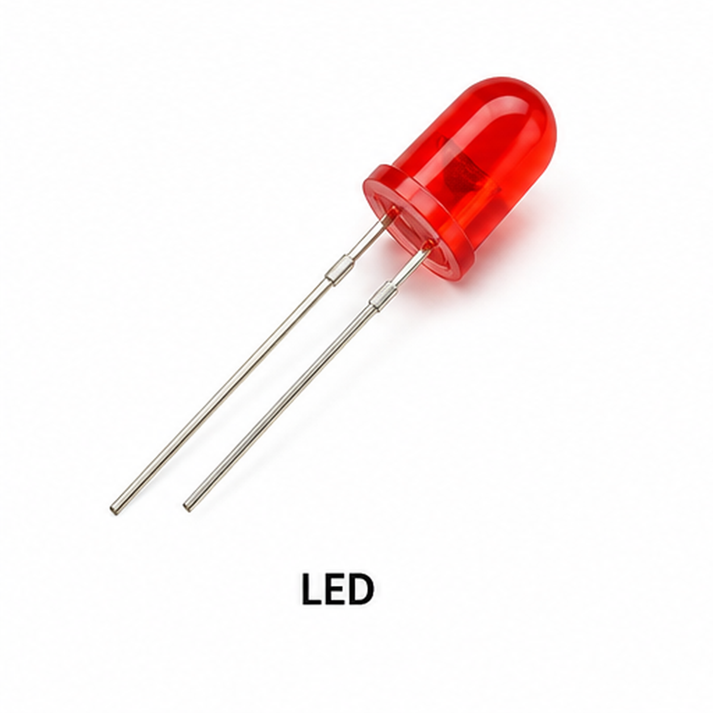

Aim
To create an electronic voting machine prototype using Arduino UNO, three push buttons, three LEDs, a buzzer and an I²C LCD.
About the Experiment
Each push button represents a candidate. Pressing a button adds one vote to that candidate.
The corresponding LED turns ON, the buzzer gives a short confirmation beep and the LCD displays the updated vote totals.
Components Required

Arduino UNO R3 (×1)
Main controller for vote counting.

Push Button (×3)
Used to vote for Candidate A, B or C.

LCD 16×2 I²C (×1)
Displays vote confirmation and totals.

LED (×3)
Shows which candidate was selected.

Buzzer (×1)
Provides a confirmation beep.

Breadboard (×1)
Used to assemble the voting circuit.

Jumper Wires
Used for electrical connections.
Circuit Connections
| Component | Connection |
|---|---|
| Candidate A Button | D2 and GND |
| Candidate B Button | D3 and GND |
| Candidate C Button | D4 and GND |
| Candidate A LED | D5 |
| Candidate B LED | D6 |
| Candidate C LED | D7 |
| Buzzer | D8 and GND |
| LCD SDA | A4 |
| LCD SCL | A5 |
Working Principle
↓
Candidate button pressed
↓
Vote count increases by 1
↓
Candidate LED turns ON
↓
Buzzer beeps
↓
LCD shows updated vote totals
Procedure
- Connect Candidate A, B and C buttons to D2, D3 and D4.
- Connect Candidate A, B and C LEDs to D5, D6 and D7.
- Connect the buzzer to D8.
- Connect LCD SDA to A4 and SCL to A5.
- Upload the Arduino code.
- Press each candidate button and observe the vote count.
Arduino Code
#include <Adafruit_LiquidCrystal.h>
// Create LCD object
Adafruit_LiquidCrystal lcd(0);
// Candidate buttons
int buttonA = 2;
int buttonB = 3;
int buttonC = 4;
// Candidate LEDs
int ledA = 5;
int ledB = 6;
int ledC = 7;
// Buzzer
int buzzer = 8;
// Vote counters
int votesA = 0;
int votesB = 0;
int votesC = 0;
void setup()
{
pinMode(buttonA, INPUT_PULLUP);
pinMode(buttonB, INPUT_PULLUP);
pinMode(buttonC, INPUT_PULLUP);
pinMode(ledA, OUTPUT);
pinMode(ledB, OUTPUT);
pinMode(ledC, OUTPUT);
pinMode(buzzer, OUTPUT);
lcd.begin(16, 2);
lcd.setBacklight(1);
lcd.clear();
lcd.setCursor(0, 0);
lcd.print("Voting Machine");
lcd.setCursor(0, 1);
lcd.print("Ready");
delay(2000);
showVotes();
}
void loop()
{
// Candidate A
if (digitalRead(buttonA) == LOW)
{
votesA++;
digitalWrite(ledA, HIGH);
tone(buzzer, 1000);
delay(200);
noTone(buzzer);
lcd.clear();
lcd.print("Vote Recorded");
lcd.setCursor(0, 1);
lcd.print("Candidate A");
delay(1000);
digitalWrite(ledA, LOW);
showVotes();
while (digitalRead(buttonA) == LOW)
{
delay(10);
}
}
// Candidate B
if (digitalRead(buttonB) == LOW)
{
votesB++;
digitalWrite(ledB, HIGH);
tone(buzzer, 1000);
delay(200);
noTone(buzzer);
lcd.clear();
lcd.print("Vote Recorded");
lcd.setCursor(0, 1);
lcd.print("Candidate B");
delay(1000);
digitalWrite(ledB, LOW);
showVotes();
while (digitalRead(buttonB) == LOW)
{
delay(10);
}
}
// Candidate C
if (digitalRead(buttonC) == LOW)
{
votesC++;
digitalWrite(ledC, HIGH);
tone(buzzer, 1000);
delay(200);
noTone(buzzer);
lcd.clear();
lcd.print("Vote Recorded");
lcd.setCursor(0, 1);
lcd.print("Candidate C");
delay(1000);
digitalWrite(ledC, LOW);
showVotes();
while (digitalRead(buttonC) == LOW)
{
delay(10);
}
}
}
void showVotes()
{
lcd.clear();
lcd.setCursor(0, 0);
lcd.print("A:");
lcd.print(votesA);
lcd.print(" B:");
lcd.print(votesB);
lcd.setCursor(0, 1);
lcd.print("C:");
lcd.print(votesC);
lcd.print(" T:");
lcd.print(votesA + votesB + votesC);
}Expected Output
Pressing a candidate button increases that candidate's vote count. The matching LED turns ON briefly, the buzzer beeps and the LCD displays the updated vote totals.
Result
The Electronic Voting Machine Prototype experiment records votes for three candidates and displays the updated counts using an I²C LCD.
What You Learn
- How to read multiple push buttons.
- How to count votes using variables.
- How to control LEDs.
- How to use a buzzer for confirmation.
- How to display values on an I²C LCD.